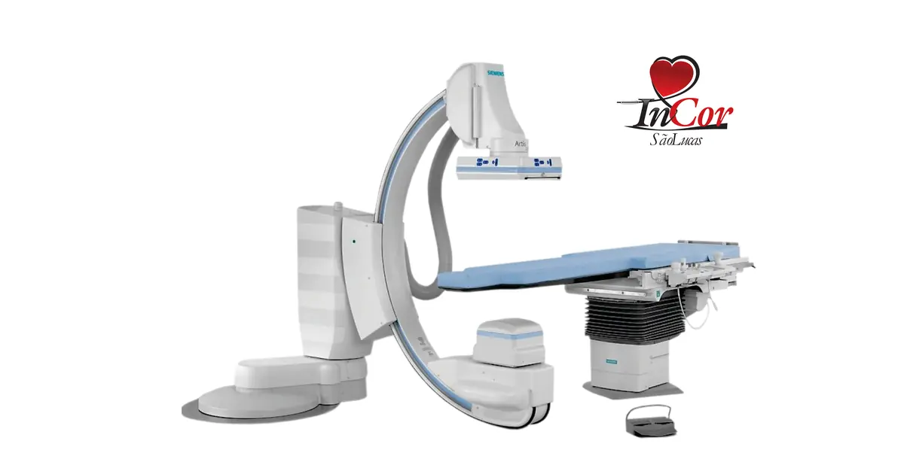
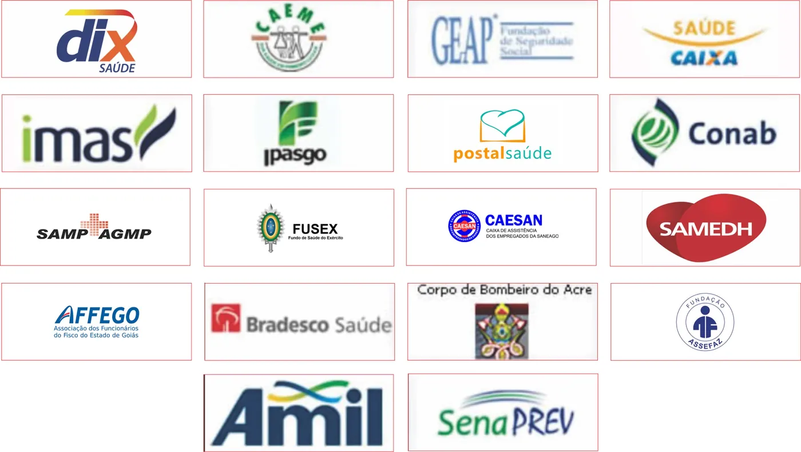

Diagnóstico
Exames e leitura clínica no mesmo centro.
Ecocardiografia, ultrassom e o acompanhamento da equipe, na Rua 4, Setor Central.
Serviços
As áreas publicadas no site, com o caminho até o detalhe de cada uma.
Hemodinâmica
Cateterismo, angioplastia, stents e valvoplastia.
Neurorradiologia
Angiografia cerebral, stents e embolizações.
Angiologia
Angiografia e angioplastias periféricas.
Ecocardiografia
Fluxo em cores, stress e transesofágico.
Ultrassom
Doppler vascular e ultrassom geral.
Arritmia
Eletrofisiologia e estimulação cardíaca.
O Incor São Lucas tem enfoque especial em saúde cardiovascular, neurologia, procedimentos minimamente invasivos e de alta complexidade.

Convênios
A grade publicada no site. A lista com busca está na página de convênios.

Centro clínico
Consulta, check-up e o preparo dos exames saem pelo telefone ou pelo WhatsApp.
Falar com a unidade